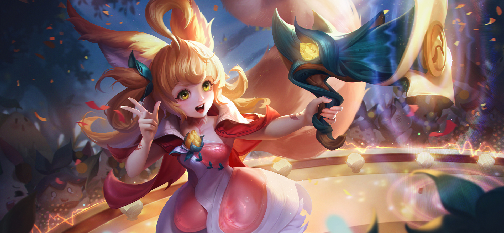
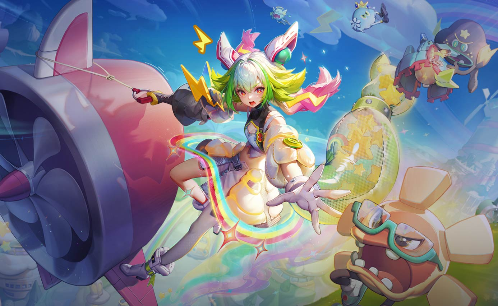
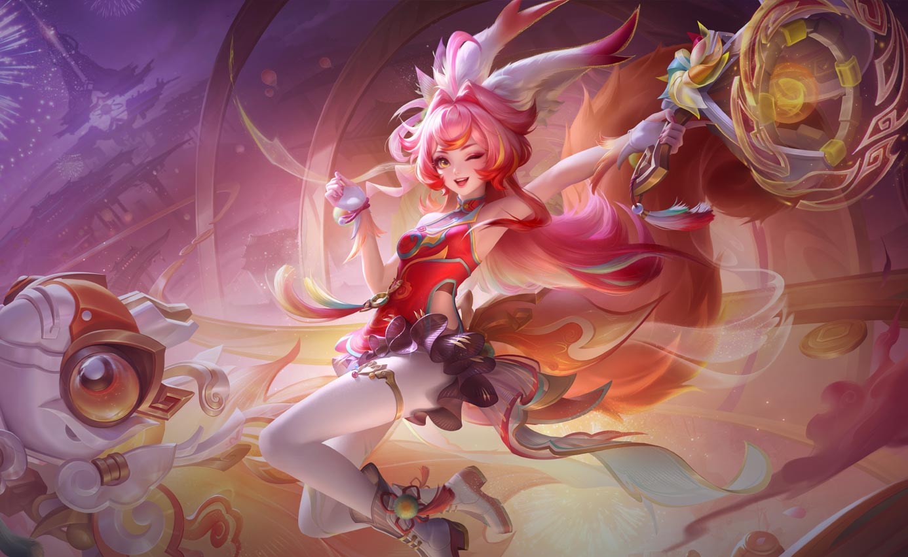
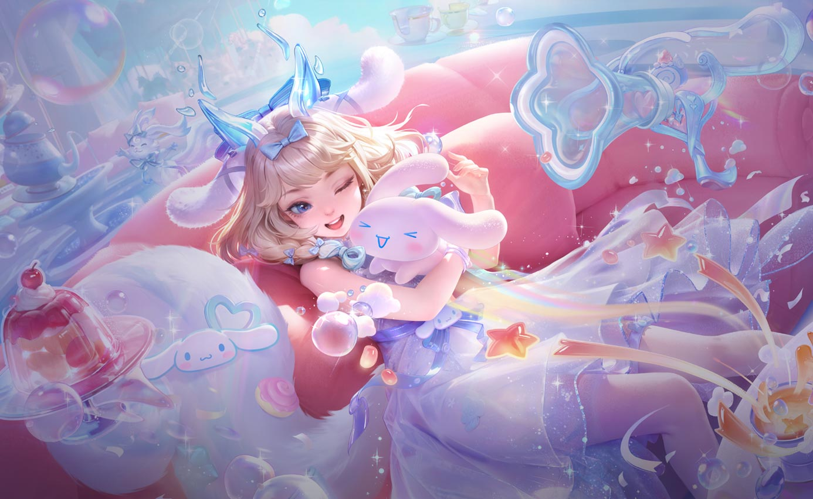

Trang Phục



Kỹ Năng
Linh hồn sóc nhỏ
Nội tại: Dưới 40% máu, Aya biến thành sóc nhỏ trong 5 giây, không bị chọn làm mục tiêu và nhận bộ chiêu thức mới.
Aya – Tinh Linh Rừng Sâu
Aya cũng từng giống như những tiểu tinh linh khác, yêu thích sự tự do và hồn nhiên ca hát khắp chốn. Nàng yêu từng ngọn cỏ lá cây trên vùng đất Rừng nguyên sinh cho nên các bậc trưởng bối đã đem nhiệm vụ gắn kết các sinh linh nơi này giao cho nàng.
Aya không phụ kỳ vọng của mọi người, nàng đã dùng sự tinh nghịch và khả năng hòa hợp độc đáo của mình để đoàn kết các bộ tộc trong rừng lại thành một khối vững chắc. Những sinh linh thuộc phe Rừng nguyên sinh nói thật là đủ mọi kỳ hình quái trạng, thể loại nào cũng có, thậm chí cũng có cả những sinh vật khổng lồ và dữ tợn nữa. Dưới sự đồng hành của Aya, mọi người đã cùng nhau vượt qua bao hiểm nguy và đẩy lùi ma tộc giương oai vạn dặm.
Sau cuộc chiến, Aya quay về mái nhà xưa và lại tiếp tục sinh hoạt vui vẻ, sống cuộc sống hồn nhiên của loài tinh linh. Tuy nhiên nàng cũng đã trưởng thành lên không ít đồng thời cũng học được cách bảo vệ những người trân quý. Cho đến nay dù Aya đã trở thành một phần không thể thiếu được mọi người yêu mến, cô vẫn luôn mang lại tiếng cười, sát cánh cùng đồng đội và canh giữ cho hòa bình, không để cho ma tộc tác oai tác quái quay lại xâm chiếm quê hương.